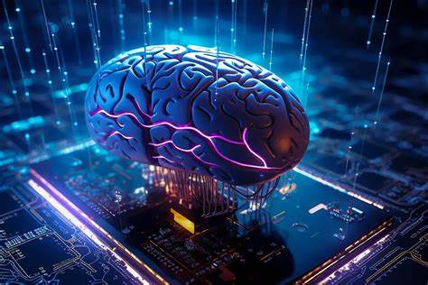

La inteligencia artificial está transformando el mundo con algoritmos capaces de aprender y tomar decisiones.
Los avances en IA incluyen desde asistentes virtuales hasta modelos de lenguaje como ChatGPT.
En el futuro, la IA continuará revolucionando áreas como salud, educación y transporte.
